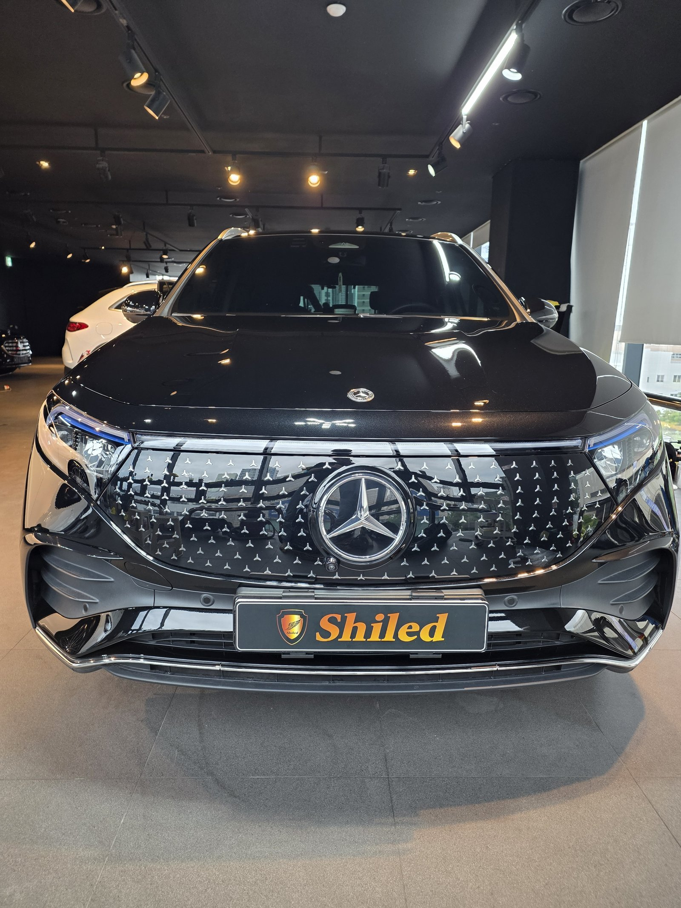
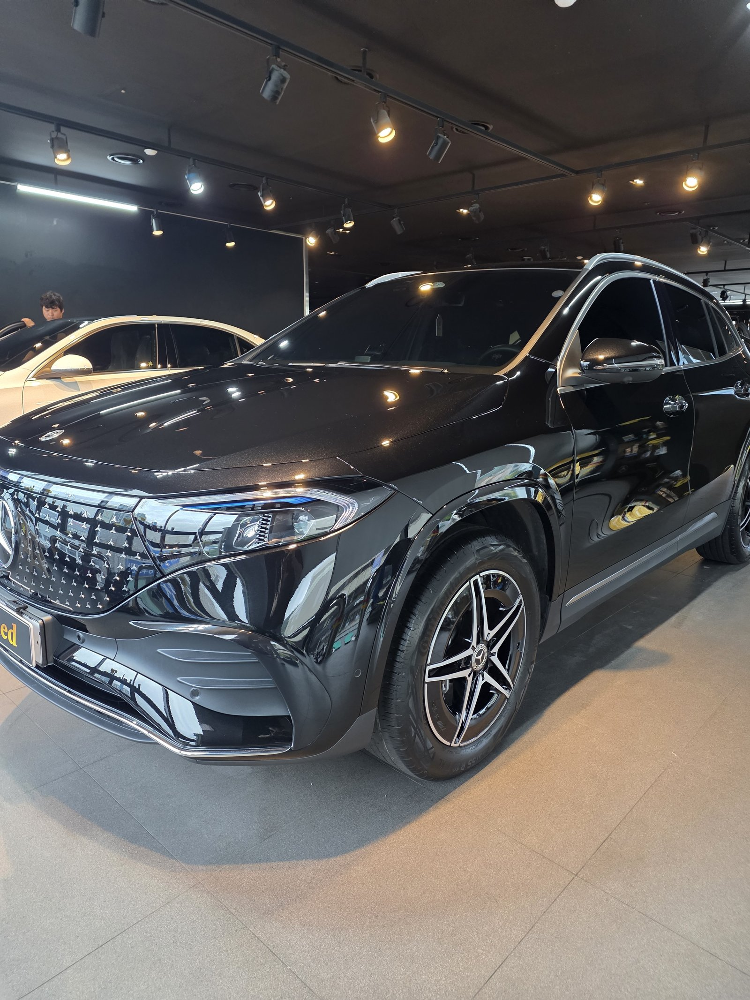
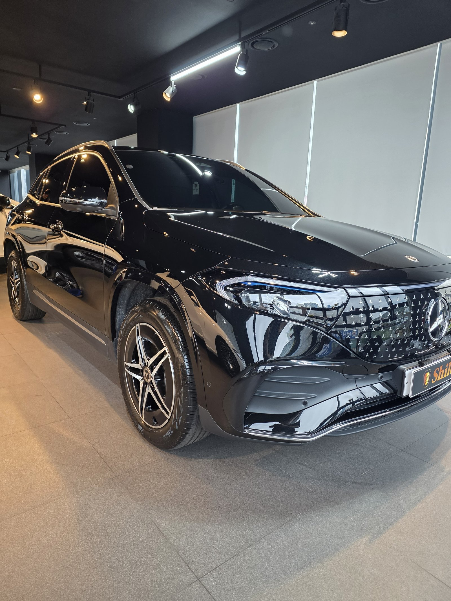
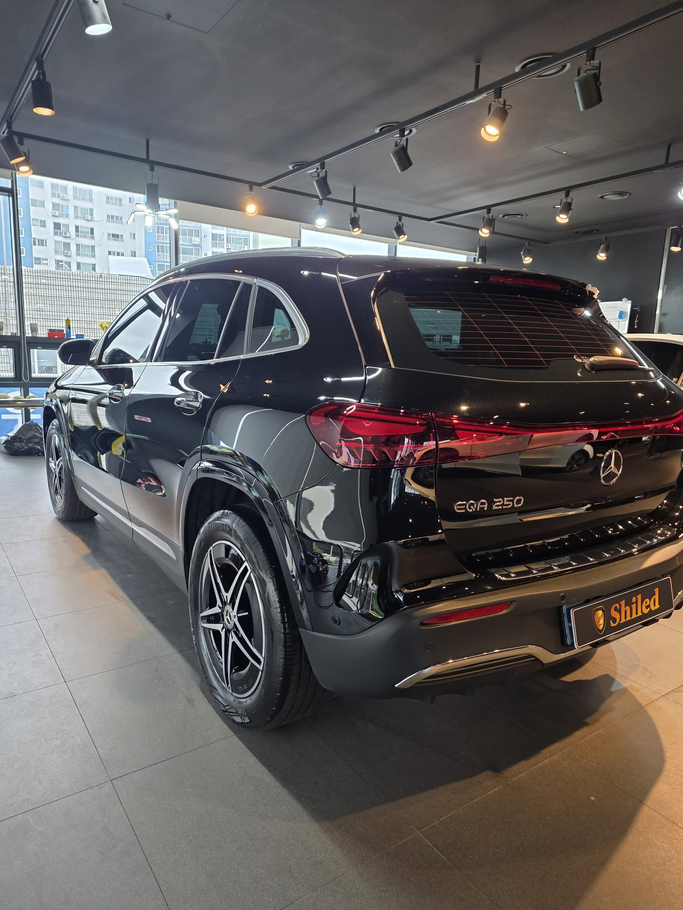
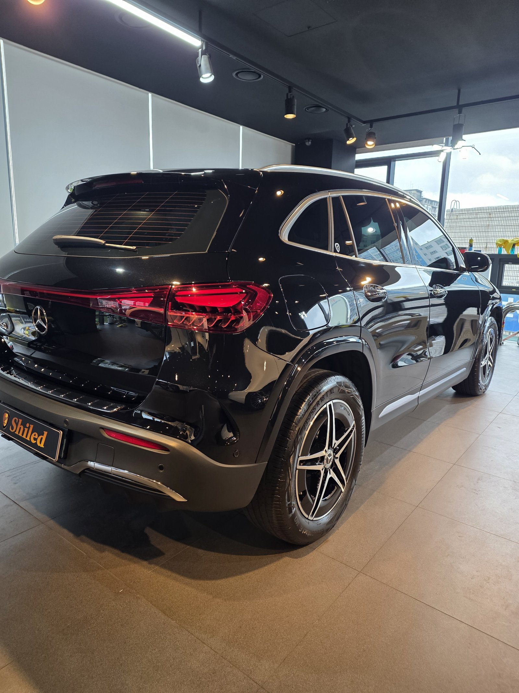
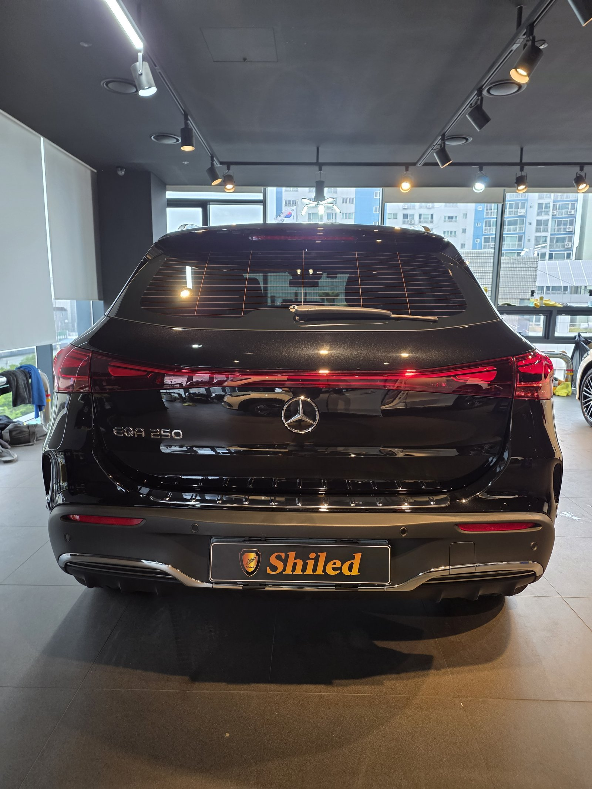
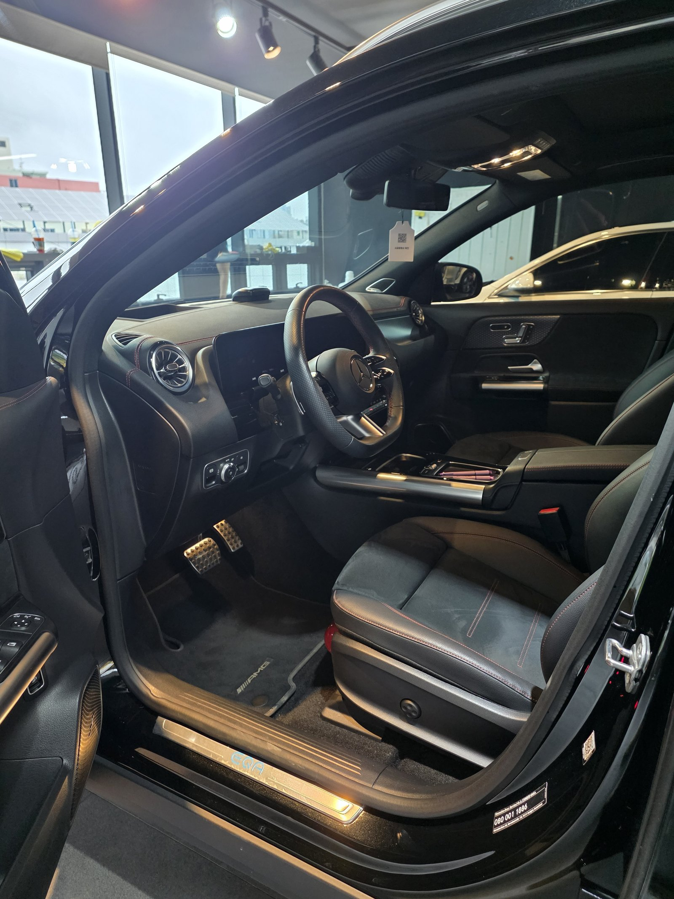
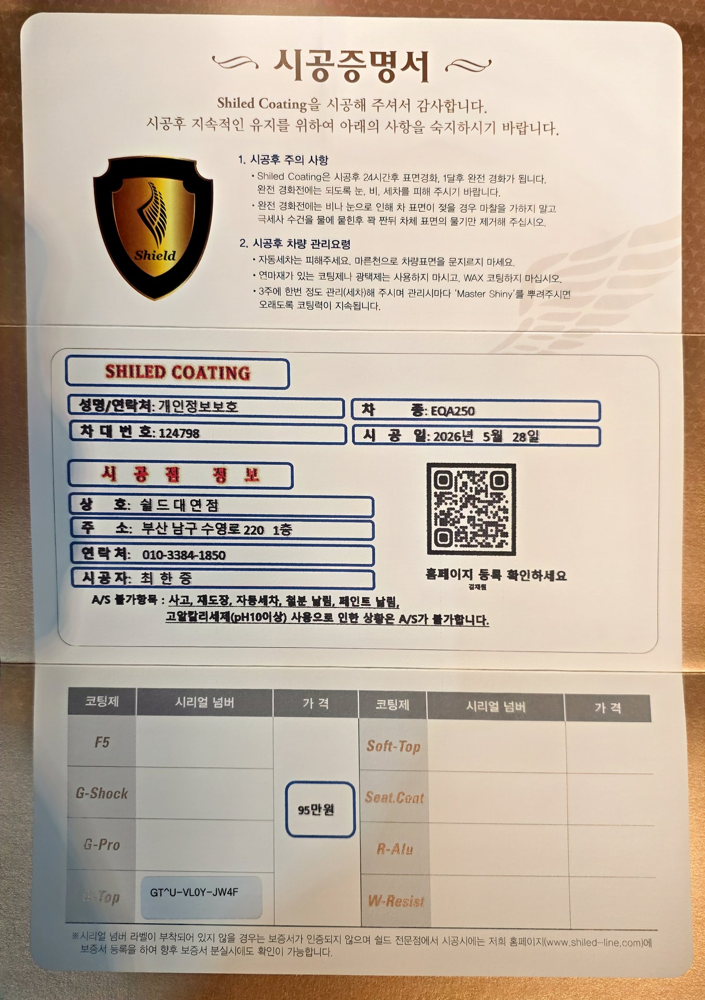

벤츠 EQA250 검정입니다. 아직 출고 전, 새 차입니다.
부산 벤츠 유리막코팅으로 쉴드광택이 진행한 이번 작업은 G-TOP 코팅입니다.

전기차일수록 출고 전 코팅이 필요한 이유
EQA250은 벤츠의 전기 SUV입니다.
내연기관차든 전기차든 도장면이 가장 깨끗할 때 올리는 코팅이 가장 오래갑니다. 출고 후에는 운행과 세차로 미세한 잔기스와 오염이 쌓이기 시작합니다. 그게 쌓이기 전, 신차 상태 그대로일 때 코팅막을 입혀두는 겁니다. 그래서 쉴드광택은 출고 전 신차 시공을 맡아 진행합니다.

전기차 오너에게 G-TOP을 권하는 이유
EQA250은 G-TOP으로 진행했습니다.
G-TOP은 발수력과 방오성이 특화된 코팅입니다. 전기차는 충전 스케줄에 맞춰 움직이다 보니 세차하러 갈 시간을 따로 내기가 쉽지 않습니다. G-TOP을 올려두면 물방울이 표면에 맺히지 않고 그대로 흘러내리고, 먼지와 오염도 잘 달라붙지 않습니다. 세차 한 번을 미루더라도 도장면 컨디션이 쉽게 무너지지 않는다는 뜻입니다. 코팅제는 대표가 화학공학 전공으로 직접 개발·제조한 제품입니다.

기술자의 팁
신차라고 바로 코팅을 올리지 않습니다. 운송·보관 중 묻은 미세 오염을 디테일링 세차와 탈지로 걷어낸 뒤에 올립니다. 깨끗한 바탕 위에 올려야 코팅이 제대로 밀착합니다.


발수 코팅이 만드는 결과
도장면 위로 조명이 또렷하게 맺히고, 물방울은 자리 잡지 못하고 굴러떨어집니다.
검정 차량은 오염이 도드라져 보이는 색상이라 관리 부담이 큰 편입니다. G-TOP을 올린 뒤에는 표면에 물기와 먼지가 오래 머물지 않아서, 세차 직후의 컨디션이 더 길게 유지됩니다. 아래 사진처럼 뒤 범퍼와 EQA 250 레터링까지 선명하게 반사되는 게 그 증거입니다.

외부만이 아니라 안까지
출고 전 차량은 안팎 컨디션을 함께 정리합니다.
실내는 AMG 라인 스티어링 휠과 페달, 도어 스커프의 EQA 레터링까지 신차 그대로 깨끗한 상태입니다. 외부 도장은 G-TOP으로 발수막을 잡고, 실내까지 정리된 상태로 인도합니다.

시공증명서를 함께 드립니다
모든 시공 차량에 시공증명서를 드립니다.
차종·시공일·코팅제 시리얼 번호가 적혀 있고, 홈페이지에 등록해 보증을 받으실 수 있습니다. 이 차는 G-TOP 코팅으로 기록돼 있습니다.

차종·시공일·코팅제 시리얼이 기재된 시공증명서
자주 묻는 질문
Q. 전기차 신차도 유리막코팅이 필요한가요?
A. 필요합니다. 전기차든 내연기관차든 도장면이 가장 깨끗한 시점은 출고 전입니다. 운행이 시작되면 충전소 오가는 길에서 잔기스와 오염이 바로 쌓이기 시작하는데, 그 전에 코팅막을 입혀두면 신차 컨디션을 훨씬 오래 지킬 수 있습니다.
Q. 검정 전기차에는 어떤 코팅이 좋나요?
A. 이 차는 G-TOP으로 진행했습니다. G-TOP은 발수력과 방오성이 특화된 코팅입니다. 전기차는 충전 때문에 세차 갈 시간을 내기가 쉽지 않은데, G-TOP을 올리면 물방울이 맺히지 않고 굴러떨어지면서 먼지와 오염이 잘 붙지 않아 세차 주기 자체를 늘릴 수 있습니다.
Q. 코팅 후 세차는 언제부터 하나요?
A. 시공 후 24시간이면 표면이 경화되고, 완전 경화까지는 한 달 정도 걸립니다. 완전 경화 전에는 자동세차나 고압 알칼리 세제 사용을 피하고, 비나 눈에 젖었을 때는 마른 천으로 문지르지 말고 물기를 머금은 극세사 수건으로 눌러 닦아주시면 됩니다.
Q. 워터스팟은 왜 생기고 어떻게 예방하나요?
A. 워터스팟은 물방울이 도장면에 오래 맺혀 있다가 마르면서 미네랄 성분이 자국으로 남는 현상입니다. G-TOP처럼 발수력이 좋은 코팅은 물방울이 표면에 머무르지 않고 바로 흘러내리기 때문에 워터스팟이 생길 여지 자체가 줄어듭니다.
Q. 쉴드광택 위치와 예약은 어떻게 하나요?
A. 부산 남구 유엔로220 1F 쉴드광택입니다. 예약·상담은 010-3384-1850, 대표 최한중이 직접 상담하고 책임 시공합니다.
전기차일수록 세차 갈 시간이 아쉽습니다. 그래서 발수·방오가 더 중요합니다.
제품을 직접 만드는 사람이 직접 시공합니다.
부산에서 벤츠 유리막코팅, 전기차 신차코팅을 고민 중이시면 편하게 연락 주십시오.
어떤 차를 타냐보다 어떻게 타냐가 중요합니다~!
📞 010-3384-1850 견적 문의쉴드광택 · 부산 남구 유엔로220 1F · 대표 최한중